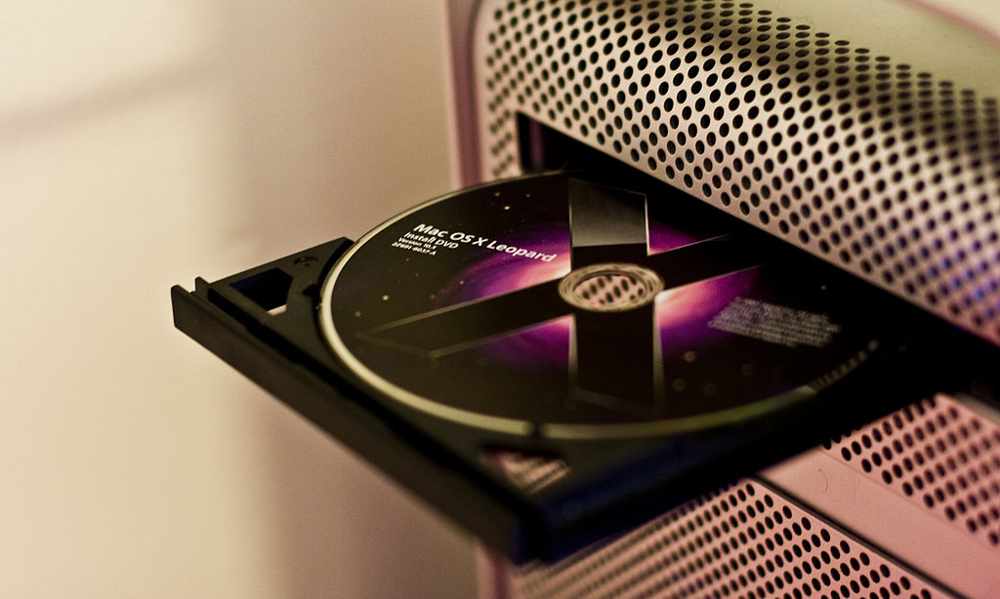

Systemy Operacyjne
iOS
– system operacyjny Apple Inc. dla urządzeń mobilnych iPhone, iPod touch oraz iPad. Obecna nazwa funkcjonuje od 7 czerwca 2010,
wcześniej system był znany jako iPhone OS.
System ten bazuje na systemie operacyjnym Mac OS X 10.5 i tym samym na Darwinie. iOS dostępny jest tylko na urządzeniach firmy Apple.
macOS
– rodzina uniksowych systemów operacyjnych produkowanych i rozprowadzanych przez Apple Inc. Dostępny oficjalnie jedynie dla komputerów Macintosh,
instalowany fabrycznie w nich od 2002 roku.
13 czerwca 2016 roku na WWDC została ogłoszona zmiana nazwy na macOS w związku z potrzebą unifikacji nazw używanych przez Apple dla swoich systemów operacyjnych
(iOS, watchOS, tvOS).
iPadOS
– system operacyjny firmy Apple Inc. dla urządzeń iPad,
zaprezentowany po raz pierwszy 3 czerwca 2019 roku podczas dorocznej konferencji Worldwide Developer Conference (WWDC).
Jest to system stworzony na bazie systemu iOS, zoptymalizowany do działania na tabletach tej firmy. Wcześniej tablety iPad działały pod kontrolą systemu iOS,
lecz wersja oznaczona numerem 13, zaprezentowana na tej samej konferencji WWDC porzuciła wsparcie dla wszystkich modeli iPada.
Od tej pory system iOS jest dostępny wyłącznie na telefony iPhone oraz odtwarzacze muzyki iPod touch.
